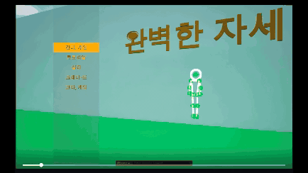
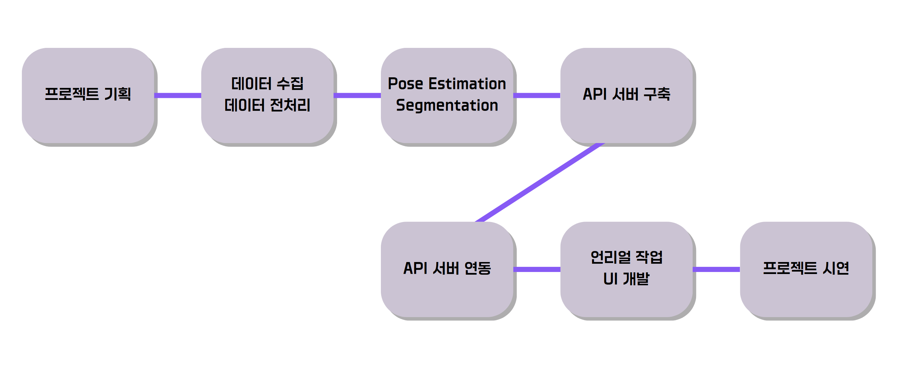
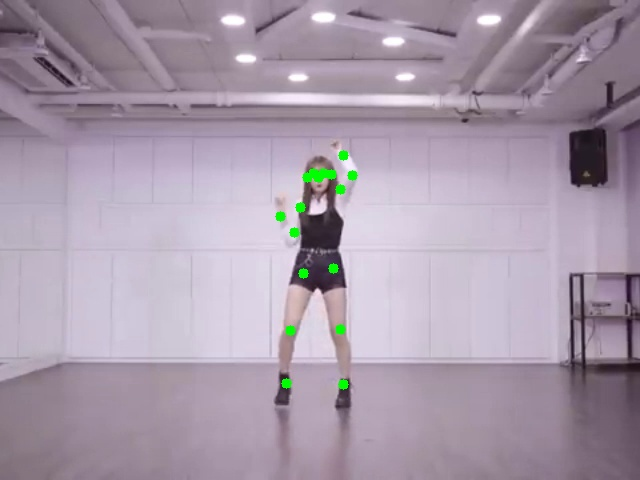
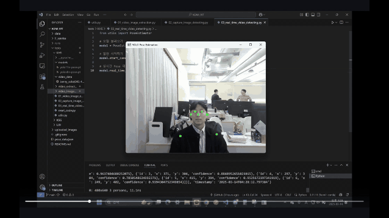

PerfectPoses - AI 자세 인식 자세 추론 게임
Problem
Project Background
"24시간 안에 기획부터 배포까지" - 본 프로젝트는 Fast Builder Challenge로 진행된 미션이었습니다.
저희는 24시간 안에 E2E 서비스 구축을 완성해야 했기에, 많은 Reference를 검토하였고 최종적으로 Steam의 "Perfect Poses"를 기반으로 플레이어가 화면에 제시된 자세를 따라하면 AI가 실시간으로 정확도를 측정하여 점수를 부여하는 리듬 게임을 개발하기로 하였습니다.
Technical Challenge
가장 큰 도전은 AI 팀(Python)과 Unreal 팀(C++) 간의 실시간 데이터 브릿지를 구축하는 것이었습니다.
웹캠을 30fps로 설정하여 캡처되는 영상을 YOLO-Pose로 Detecting하고, 17개 관절 좌표를 최적화된 WebSocket을 통해 Unreal Engine에 지연 없이 전달하여, 짧은 개발 기간 내에 완성도 높은 게임플레이 경험을 제공해야 했습니다.
Fast Builder Mindset
완벽한 코드보다 "동작하는 프로토타입"을 우선시 했습니다.
기술적 완성도와 시간 제약 사이에서 빠른 의사결정이 요구되었고, 협업간의 명확한 인터페이스 정의가 핵심이었습니다.
Solution
What We Built
- YOLO11-Pose 기반 실시간 17개 관절 좌표값 검출 엔진
- FastAPI 비동기 WebSocket 서버 (AI ↔ Unreal 브릿지)
- Meta AI SAM 라이브러리를 활용한 Player Segmentation 모듈
- Unreal Engine 5 게임 클라이언트 (자세 매칭 + 스코어링)
- Bllossom (한국어 LLM) 활용 자세 피드백 생성
Core Value
24시간이라는 시간 제약 속에서 기획 → 설계 → 개발 → 테스트 → 배포까지 End-to-End 파이프라인을 완성했습니다.
AI 팀과 Unreal 팀이 병렬로 작업할 수 있도록 API 인터페이스를 먼저 정의하고, 각 팀이 독립적으로 개발한 후 통합하는 전략을 채택했습니다. 이를 통해 실무에서 늘 있을 수 있는, 서로 다른 조직과의 협업 프로젝트 경험을 간접적으로나마 체험하기로 하였습니다.
주요 성과
- 개발 기간 — 24시간 내 E2E 게임 서비스 완성 (기획 → 배포)
- API 응답 시간 — 평균 50ms 미만 달성
- 실시간 처리 — 30fps 웹캠 기반 YOLO-Pose 자세 감지
- 기술 스택 통합 — YOLO-Pose + SAM + FastAPI + Unreal Engine 5
- 팀 협업 — AI 3명 + Unreal 3명 병렬 개발 체계 구축
Project Workflow

Data Flow
웹캠 캡처 (30fps) → OpenCV 전처리 → YOLO11-Pose 추론 → 17개 관절 좌표 추출 → JSON 직렬화 → FastAPI REST API → Unreal Engine 렌더링 → 자세 매칭 & 스코어 계산
Communication Protocol
AI 서버와 Unreal 클라이언트 간 통신은 JSON over HTTP로 구현했습니다. Unreal에서 주기적으로 /api/pose 엔드포인트를 폴링하여 최신 자세 데이터를 가져오는 방식입니다. 실시간성이 중요한 게임이므로 응답 지연을 최소화하기 위해 비동기 처리와 싱글톤 모델 인스턴스 패턴을 적용했습니다.
What I Built
1. Project Leading (PL)
중고 신입의 강점을 살려서, 이전 PM 경력을 바탕으로 프로젝트 전반을 리딩했습니다.
- 킥오프 & 기획 확정: 레퍼런스 게임 분석 → AI 핵심 기능 협력 계획 정의 → MVP 범위 설정
- 팀 구성 & 역할 분배: AI 3명 / Unreal 3명 역할 명확화, 병렬 작업 가능하도록 태스크 분리
- 인터페이스 선정의: AI-Unreal 간 API 명세서를 방향 수립 이후, 3시간 내 확정하여 양 팀 독립 개발 가능하도록 조치
- 일정 관리: 24시간을 4단계(기획/개발/통합/마무리)로 분할하고, 단계 별 발표 전략 수립
- 리스크 관리: 통합 테스트 시점을 중간에 배치하여 조기 이슈 발견 및 대응 전략 마련
2. YOLO-Pose Engine
PoseEstimator 클래스 기반 실시간 포즈 감지 엔진을 구축했습니다.


- YOLO11n-pose 모델 활용 (경량화로 실시간 처리 가능)
- 17개 COCO Keypoints 추출: nose, eyes, ears, shoulders, elbows, wrists, hips, knees, ankles
conf_threshold=0.5이상 신뢰도 관절만 필터링- 싱글톤 패턴으로 모델 로딩 오버헤드 제거
- OpenCV 기반 프레임 처리 및 키포인트 시각화
Service Demo
성과 및 회고
주요 성과
- 24시간 내, MVP 단계의 E2E 게임 서비스 완성 (기획 → 배포)
- AI 3명 + Unreal 3명 팀 효율적 협업 체계 구축
- YOLO-Pose + SAM + FastAPI + UE5 기술 스택 통합
- 평균 API 응답 시간 < 50ms 달성
- 실시간 30fps 웹캠 기반 자세 감지 구현
시행착오
초기 기획에서는 YOLO-Pose로 추출한 Keypoints를 기반으로 Unreal Engine 내에서 사람을 따라하는 캐릭터 모션을 구현하기로 계획했습니다. 하지만 통합 테스트 단계에서 문제를 발견하게 되었는데, AI 서버에서 전달한 Keypoints 좌표 변경값은 정상적으로 인식되었지만, Unreal 측 캐릭터 UI가 이를 자연스러운 움직임으로 변환하지 못했습니다. 사람처럼 자연스럽게 움직이려면 관절별 회전값과 뼈 구조에 대한 깊은 이해가 필요했고, 24시간이라는 제한된 시간 안에 이를 구현하기는 현실적으로 불가능했습니다.
이때, 저는 처음으로 많이 당황했던 것 같습니다. 게임 개발 경험이 전무했기 때문에, 어떤 대안을 내놓아야 하는지 감을 잡지 못했던 기억이 납니다.
하지만 팀원들의 아이디어와 빠른 실행력으로 전략을 수정하여, 복잡한 캐릭터 애니메이션 대신 Point-to-Point 레이저 연결 방식으로 UI를 단순화했습니다. 그 결과 "언리얼 엔진치고는 저퀄리티"라는 아쉬움은 남았지만, 핵심 게임 로직과 자세 인식 기능을 시간 내에 완성할 수 있었습니다. 이 경험을 통해 MVP 단계에서는 완성도보다 핵심 기능 구현에 먼저 집중하는 것이 중요하다는 것을 체감했습니다.
기술적 성장
이 프로젝트를 통해 저는 '완벽한 코드' 보다 '동작하는 프로토타입'이 더 중요할 수 있다는 사실을 체감했습니다.
제한된 시간 안에서 어떤 기능에 집중하고 무엇을 과감히 내려놓을지 판단하는 것이 프로젝트 완성도를 결정했다고 생각합니다.
특히, 인터페이스를 먼저 정의하는 것이 협업 개발에서 굉장히 중요하다는것을 느꼈습니다.
API 스펙을 초기에 확정함으로써 AI 팀과 Unreal 팀은 서로를 기다리지 않고 독립적으로 개발할 수 있었습니다.
또 하나의 배움은, 통합 테스트 과정이었습니다.
개별 기능은 정상 동작했지만, 시스템을 연결하는 순간 예상치 못한 문제가 드러났고, 만약 프로젝트 기획에서 테스트 시점을 마지막에 배치했다면 아마 완성하지 못했을 프로젝트였을거라고 생각합니다.
이후 TDD와 단위·통합 테스트의 개념을 접하며, 테스트가 더 높은 품질의 코드를 만들기 위한 기반이라는 인식을 갖게 되었습니다.